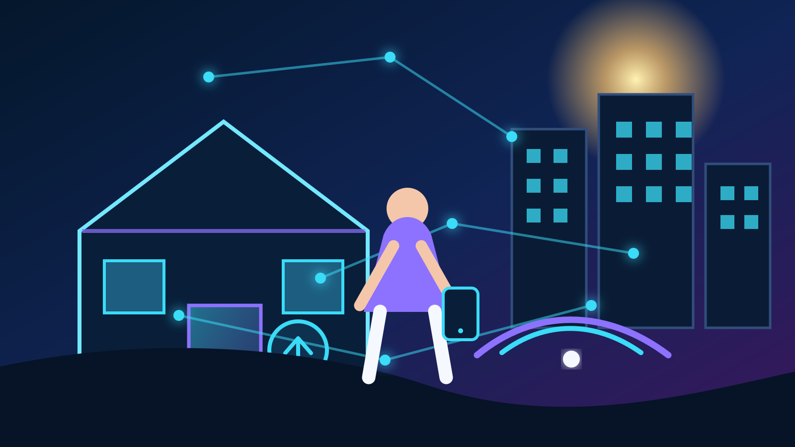

01
Hogar inteligente
Alarma, reloj, cafetera, persianas, climatización, iluminación y ahorro energético coordinados.

Unidad 06 · El despertar del mundo conectado
Una historia educativa sobre objetos, sensores y servicios digitales que colaboran en el hogar, la ciudad y el trabajo.
Propósito
Recurso principal
Si el reproductor solicita acceso, abre el video directamente en Google Drive.
Síntesis
El Despertar del Mundo Conectado relata un día en la vida de Mara para mostrar cómo el Internet de las Cosas integra objetos físicos, sensores, redes y servicios digitales. Al comenzar la mañana, su vivienda automatizada coordina la alarma, el reloj inteligente, la cafetera, las persianas, la iluminación y la climatización. Más tarde, un servicio de movilidad analiza el tráfico, detecta un retraso y propone una ruta alternativa.
En la oficina, Mara observa sensores de humedad, riego automatizado, iluminación adaptativa, control de temperatura, mantenimiento preventivo y gestión energética. Al volver a casa, los dispositivos conectados administran la seguridad y el consumo nocturno. La historia presenta beneficios como comodidad, automatización, continuidad de servicios y uso eficiente de recursos, pero también recuerda que la conectividad debe diseñarse y utilizarse respetando la autonomía, la seguridad, la privacidad y el control humano.
Historia audiovisual
Alarma, reloj, cafetera, persianas, climatización, iluminación y ahorro energético coordinados.
Análisis del tráfico, alertas de transporte y propuesta automática de una ruta alternativa.
Sensores de humedad y ocupación, riego, iluminación, ventilación y mantenimiento preventivo.
Reflexión sobre eficiencia, control humano, privacidad, seguridad y diseño centrado en las personas.
Materiales
Transparencia
MagicLight se utilizó como apoyo para la generación audiovisual de personajes, escenarios, voces y secuencias narrativas. Google Drive permitió revisar y organizar los archivos del proyecto. El equipo asumió la planificación, la elaboración del guion, la revisión académica, la accesibilidad, la edición y la validación del contenido final.